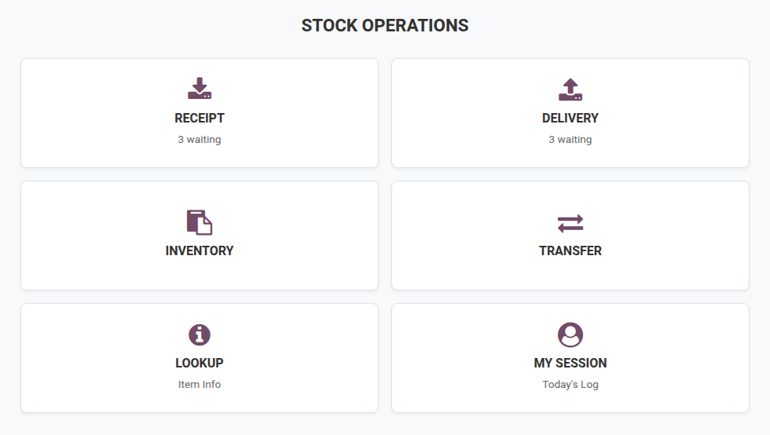
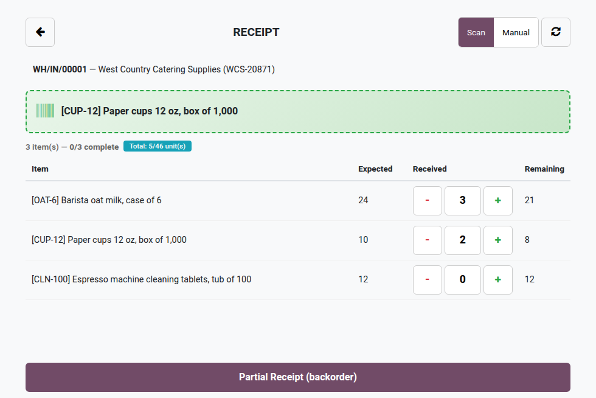
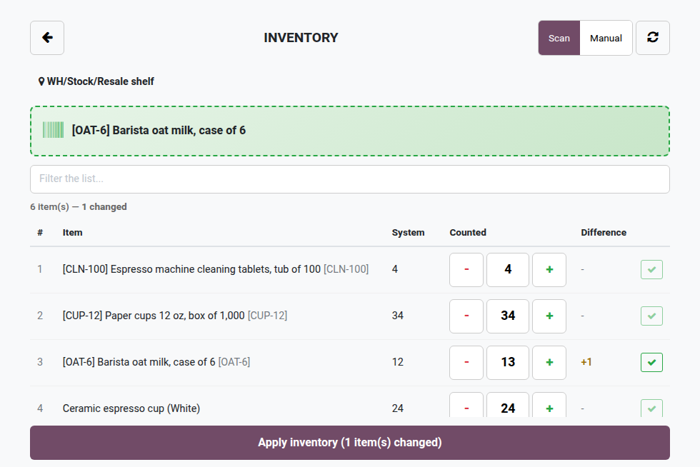
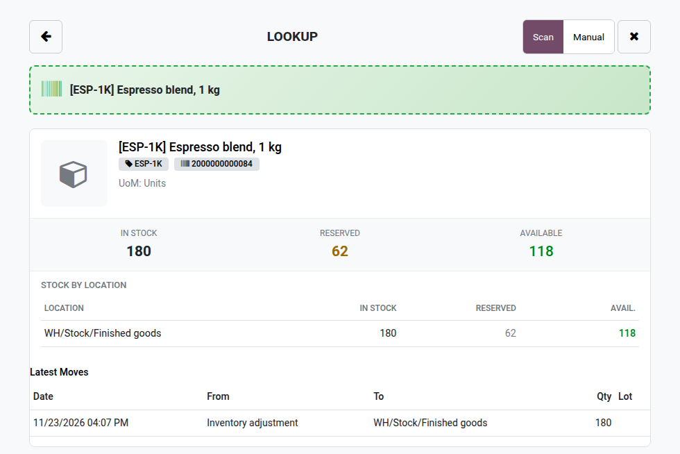

Receive, ship, count and transfer by scanning — five touch screens designed for the field, with any scanner or the phone's camera. No Enterprise license.
On the dock, the operator has neither a mouse nor a comfortable keyboard: they have a scanner and their hands full. Odoo's native stock views are still designed for the office — too many fields, too many clicks, no audio feedback when a scan goes through. The result: quantity errors, forgotten lines and an inventory count that drags on. What is missing is a full-screen touch interface that reacts to the beep.
Six large tiles, with what is waiting at the dock: three receipts, three deliveries. No Odoo menu to go through.

Each scan of the supplier's barcode adds one to the line and the last item read stays in green. Expected, received and remaining stay in view; validating now leaves the rest as a backorder.

The shelf's stock is listed; one scan or the +/- buttons correct the count, and the difference shows before anything is applied.

On hand, reserved and available, by location, and the latest moves dated in the operator's own time zone.

The Stock Barcode — Lots & Serials extension adds to these same screens lot entry by scan, expiration dates, generation and pasting of serial numbers, scan-to-pick on delivery and Code128 PDF labels per lot.
LGPL-3 license — compatible with Odoo 19.0. Support: apps@odooskills.com.